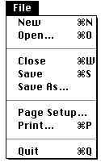
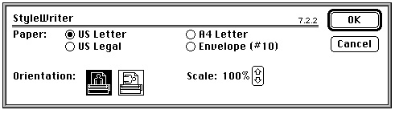
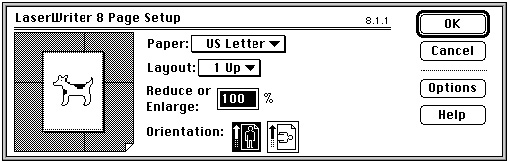
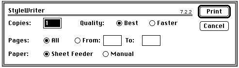
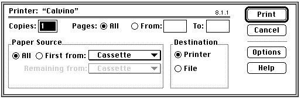
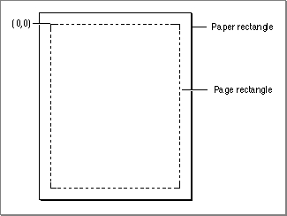
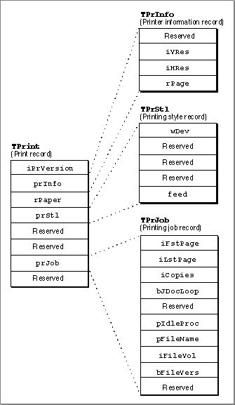
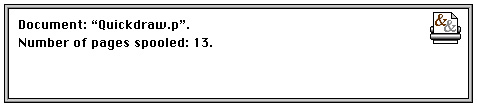
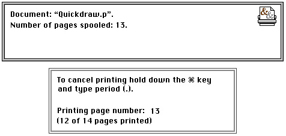

Legacy Document
Important: The information in this document is obsolete and should not be used for new development.
Important: The information in this document is obsolete and should not be used for new development.


About the Printing Manager
The Printing Manager is a collection of system software routines that your application can use to print from the Macintosh computer to any type of connected printer. The Printing Manager is available on all Macintosh computers. When printing, your application calls the same Printing Manager routines regardless of the type of printer selected by the user.When you print a document using the Printing Manager, the Printing Manager uses a printer driver to do the actual printing. A printer driver does any necessary translation of QuickDraw drawing routines and--when requested by your application--sends the translated instructions and data to the printer. Printer drivers are stored in printer resource files, which are located in the Extensions folder inside the System Folder. Each type of printer has its own printer driver. One printer driver can communicate with several printers of the same type; for example, the LaserWriter printer driver can work with multiple LaserWriter printers on a network.
The current printer is the printer that the user last selected from the Chooser. It is the printer driver for the current printer that actually implements the routines defined by the Printing Manager. Every Printing Manager routine you call determines the current printer from a resource in the System file and then dispatches your call to the printer driver for that printer.
To print a document, your application uses the
PrOpenprocedure to open the driver for the current printer. Your application then uses thePrOpenDocfunction to open a printing graphics port, which is a data structure of typeTPrPort; it consists of a QuickDraw graphics port (either aGrafPortorCGrafPortrecord) plus additional information. For each page in a document, your application uses thePrOpenPageprocedure to open the page. Your application then uses QuickDraw routines to draw onto the page.Ideally, your application should be device-independent, so that when it prints a document, it doesn't rely on the presence of any one printer feature. In general, there are two types of printer drivers: those for QuickDraw printers and those for PostScript printers. QuickDraw printer drivers render images using QuickDraw and then send the rendered images to the printer as bitmaps or pixel maps. PostScript printer drivers convert QuickDraw operations into equivalent PostScript operations, as necessary. The driver sends the converted PostScript drawing operations to the printer, which renders the images by interpreting these operations.
For most applications, sending QuickDraw's picture-drawing routines to the printer driver is sufficient: the driver either uses QuickDraw or converts the drawing routines to PostScript. For some applications, such as page-layout programs, this may not be sufficient; such applications may rely on printer drivers to provide several features that are not available, or are difficult to achieve, using QuickDraw.
If your application requires these features (such as rotated text and dashed lines), you may want to create two versions of your drawing code: one that uses picture comments to take advantage of these features on capable printers, and another that provides QuickDraw-based approximations of these features. Created with the QuickDraw procedure
PicComment, picture comments are data or commands used for special processing by output devices, such as printer drivers. Picture comments may be included in the code an application sends to a printer driver, or stored in the definition of a picture. For more information, see Appendix B, "Using Picture Comments for Printing," in this book.For information about how the PostScript language works and the specifics of PostScript commands, see the PostScript Language Reference Manual, second edition, published by Addison-Wesley.
The Printing Graphics Port
You use thePrOpenDocfunction to open a document for printing. ThePrOpenDocfunction in turn opens a printing graphics port and returns a pointer to aTPrPortrecord, which defines the printing graphics port.
TYPE TPPrPort = ^TPrPort; TPrPort = {printing graphics port record} RECORD gPort: GrafPort; {graphics port for printing} gProcs: QDProcs; {procedures for printing in the } { graphics port} {more fields for internal use} END;The graphics port in thegPortfield is either aCGrafPortorGrafPortrecord, depending on whether the current printer supports color and grayscale and whether Color QuickDraw is available on the computer. If you need to determine the type of graphics port, you can check the high bit in therowBytesfield of the record contained in thegPortfield; if this bit is set, the printing graphics port is based on aCGrafPortrecord.You print text and graphics by drawing into a printing graphics port using QuickDraw drawing routines, just as if you were drawing on the screen. The printer driver installs its own versions of QuickDraw's low-level drawing routines in the
gProcsfield of theTPrPortrecord. Your calls to high-level QuickDraw routines then drive the printer instead of drawing on the screen.As you draw each page of a document into the printing graphics port, the printer driver translates the calls to QuickDraw routines into the equivalent instructions for the printer. The printer itself does nothing except draw the document on a page, exactly as the printer driver directs it.
Before ever printing a document, however, your application must obtain various printing preferences from the user--usually when the user chooses the Page Setup or Print command from the File menu.
Getting Printing Preferences From the User
If it's likely that a user will want to print the data created with your application, you should support the Page Setup command and the Print command in the File menu. Figure 9-1 shows a typical File menu that includes the Page Setup and Print commands. (See the chapter "Menu Manager" in Inside Macintosh: Macintosh Toolbox Essentials for detailed information about setting up a File menu with these commands.)Figure 9-1 A standard File menu for an application

In response to the Page Setup command, your application should display the current printer's style dialog box, which allows the user to specify the printing options--such as the paper size and the printing orientation--that your application needs for formatting the document in the frontmost window. In response to the Print command, your application should display the current printer's job dialog box, which solicits from the user printing information--such as the number of copies to print, the print quality, and the range of pages to print--for the document in the frontmost window. Each printer driver defines its own style dialog box and job dialog box. Your application can also provide other printing options in these dialog boxes when appropriate.A
TPrintrecord contains the information about the user's choices made with the style and job dialog boxes. When the user saves a document, your application should save theTPrintrecord associated with that document. This allows your application to resume using any style preferences that the user has selected for printing that document. While only the information the user specifies through the style dialog box should be preserved each time the user prints the document, you can save the entireTPrintrecord when you save the document. The information supplied by the user in the job dialog box should pertain to the document only while the document prints; you should not reuse this information if the user prints the document again.The values that the user specifies through the style dialog box apply only to the printing of the document in the active--that is, frontmost--window. In general, the user should have to specify these preferences only once per document, although the user can choose to change these settings at any time. Figure 9-2 shows the StyleWriter printer driver's style dialog box, displayed by an application in response to the Page Setup command.
Figure 9-2 The style dialog box for a StyleWriter printer

Figure 9-3 shows the style dialog box for a LaserWriter printer. Because each printer resource file defines its own style dialog box, a style dialog box for one printer may differ slightly from that of another printer (as you can see by comparing Figure 9-2 with
Figure 9-3).Figure 9-3 The style dialog box for a LaserWriter printer

You use thePrStlDialogfunction to display the style dialog box defined by the resource file of the current printer. ThePrStlDialogfunction handles all user interaction in the items defined by the printer driver until the user clicks the OK or Cancel button. You must call thePrOpenprocedure prior to callingPrStlDialogbecause the current printer driver must be open for your application to successfully callPrStlDialog.Figure 9-4 shows an example of a job dialog box. Your application should print the document in the active window if the user clicks the Print button.
Figure 9-4 The job dialog box for a StyleWriter printer

Figure 9-5 shows a job dialog box for a LaserWriter printer.Figure 9-5 The job dialog box for a LaserWriter printer

Your application uses thePrJobDialogfunction to display the job dialog box defined by the resource file of the current printer. ThePrJobDialogfunction handles all user interaction in the items defined by the printer driver until the user clicks the Print or Cancel button.Your application can customize the style dialog box and the job dialog box to ask for additional information. (Figure 9-12 on page 9-33 shows a print job dialog box that includes two extra checkboxes.) If you customize the style or job dialog box, you must provide a function that handles events, such as clicks, in any items that you add to the dialog box, and you should provide an event filter function to handle events not handled by the Dialog Manager in a modal dialog box.
QuickDraw and PostScript Printer Drivers
There are two main types of printer drivers for Macintosh computers: QuickDraw printer drivers and PostScript printer drivers.Using QuickDraw drawing operations, QuickDraw printer drivers render images on the Macintosh computer and then send the rendered images to the printer in the form of bitmaps or pixel maps. The printer might be a dot-matrix printer, an ink jet printer, a laser printer, or a plotter.
QuickDraw printers are not required to have any intelligent rendering capabilities. Instead, they simply accept instructions from printer drivers to place dots on the page in specific places. A QuickDraw printer driver captures in a temporary disk file (called a spool file)--or in memory--the images of an entire page, translates the pixels into dot-placement instructions, and sends these instructions to the printer.
QuickDraw printers are relatively inexpensive to produce because they don't require sophisticated rendering capabilities--instead, they rely on the rendering capabilities of the Macintosh computer. However, QuickDraw printers are also relatively slow. Over 7 million pixels are required to render an 8-by-10-inch image at 300 dpi. Many QuickDraw printers use some form of data compression to improve their performance. For the ImageWriter printer, for example, the printer driver instructs the printer only where to place ink; the printer driver assumes that the rest of the page should remain untouched. Nevertheless, nearly 900 KB is required to render a full-page image at 1 bit per pixel. A color printer that uses 8 bits per pixel requires eight times as much data. Such large memory requirements may require the driver to process the image in horizontal strips, or bands, which further impairs printing speed.
- Note
- The internal format of spool files is private to the printer drivers and may vary from one printer driver to another. You should not attempt to determine or manipulate the format of these files.

PostScript printer drivers, on the other hand, convert QuickDraw drawing operations into equivalent PostScript drawing operations, as necessary. PostScript printers have their own rendering capabilities. Instead of rendering an entire page on the Macintosh computer and sending all the pixels to the printer, PostScript printer drivers typically send drawing commands directly to the printer, which itself renders images on the page. Many of Apple's LaserWriter printers use the PostScript page-description language to render images in this way, thereby off-loading image processing from the computer. This gives PostScript printers a speed advantage over QuickDraw printers.
QuickDraw printer drivers must capture an entire page before sending any of it to the printer, but PostScript printer drivers may be able to send commands as soon as they are generated to printers. This can result in faster printing, but it doesn't allow the printer driver to examine entire pages for their use of color, fonts, or other resources that the printer needs to have specially processed. Therefore, some PostScript printer drivers may capture page images in a spool file so that the driver can analyze the pages before sending them to the printer.
Some printer drivers allow users to specify background printing, which allows the user to work with an application while documents are printing. These printer drivers, which can be either QuickDraw or PostScript, send printing data to a spool file in the PrintMonitor Documents folder inside the System Folder. Do not confuse the different uses of these various spool files. With background printing, print files are spooled to disk to allow the user to work with an application while documents are printing; many printer drivers support background printing regardless of their other capabilities. Some printer drivers create spool files while processing a page image--this, however, does not allow the user to work with the application while the document is printing.
- IMPORTANT
- There is no reliable manner in which you can determine whether a printer driver creates a spool file--whether for processing of a page image or for background printing. With the exception of using the
PrPicFileprocedure, described on page 9-68, your print loop should not base any of its actions on whether a printer driver creates a spool file.Page and Paper Rectangles
When printing a document, you should consider these two aspects of the layout of the page:
The page rectangle represents the boundaries of the printable area on a page. Its upper-left corner always has the coordinates (0,0). The coordinates of the lower-right corner give the maximum page height and width attainable on the given printer; these coordinates are specified by the units used to express the resolution of the printing graphics port. For example, the lower-right corner of a page rectangle used by the PostScript LaserWriter printer driver for an 8.5-by-11-inch U.S. letter page is (730,552) at 72 dpi.
- the physical size of the paper
- the area on the paper that the printer can use to format the document, which is usually smaller than the physical sheet of paper to account for margins or the mechanical limitations of the printer
The paper rectangle gives the physical paper size, defined in the same coordinate system as the page rectangle. Thus, the upper-left coordinates of the paper rectangle are typically negative, and its lower-right coordinates are greater than those of the page rectangle. Figure 9-6 shows the relationship of these two rectangles.
Figure 9-6 Page and paper rectangles

Your application should always use the page rectangle sizes provided by the printer driver and should not attempt to change them or add new ones. If your application offers page sizes other than those provided by the printer driver for the current printer, you risk compatibility problems.When formatting a page for printing, remember to use the page rectangle size that the user has chosen to format the document. (See "The TPrint Record and the Printing Loop" on page 9-10 for more information about where to find the user's choices for formatting the document.)
Printer Resolution
Resolution refers to the degree of detail at which a device such as a printer or a screen can display an image. Resolution is usually specified in dots per inch, or dpi, in the x and y directions. The higher the value, the finer the detail of the image.A printer driver supports either discrete or variable resolution. If a printer driver supports discrete resolution, an application can choose from only a limited number of resolutions that are predefined by the printer driver. For example, the ImageWriter printer driver supports four discrete resolutions: 72 by 72 dpi, 144 by 144 dpi, 80 by
72 dpi, and 160 by 144 dpi.If a printer driver supports variable resolution, an application can define any resolution within a range bounded by maximum and minimum values defined by the printer driver. LaserWriter printer drivers support variable resolution within a range from 25 dpi to 1500 dpi in both the x and y directions.
To print, your application does not need to check the resolutions available or set the resolution. However, if your application does factor in possible resolutions, it can obtain the best quality output from a printer by choosing equal resolutions for the x and y directions. For information on how to determine the available resolution or resolutions for the currently selected printer, see "Determining and Setting the Resolution of the Current Printer" on page 9-28.
The TPrint Record and the Printing Loop
To print a document, you need to create a print record. TheTPrint recordis a data structure of typeTPrint, and it contains fields that specify the Printing Manager version, information about the printer (such as its resolution in dpi), and the dimensions of the paper rectangle. Most Printing Manager routines require that you provide a handle to aTPrintrecord as a parameter.Your application allocates the memory for a
TPrintrecord (using the Memory Manager functionNewHandle, for example) and then initializes the newTPrintrecord using thePrintDefaultprocedure. (Your application can also validate an existingTPrintrecord by using thePrValidatefunction.) When the user chooses the Print command, your application passes a handle to aTPrintrecord to thePrJobDialogorPrDlgMainfunction to display a job dialog box to the user; the function alters theTPrintrecord according to the user's responses.When the user chooses the Page Setup command, your application passes a handle to a
TPrintrecord to thePrStlDialogorPrDlgMainfunction to display a style dialog box to the user; the function alters theTPrintrecord according to the user's responses.The
TPrintrecord contains several other records, as illustrated in Figure 9-7. TheTPrInforecord, which is a data structure of typeTPrInfo, gives you the information needed for page composition, including the vertical and horizontal resolutions of the printer in dpi and the boundaries of the page rectangle. The TPrJob record, which is a data structure of typeTPrJob, gives you information about a particular print job--for instance, the first and last pages to be printed, the number of copies, and the method of printing that the Printing Manager will use.
ThePrJobDialog,PrStlDialog, andPrDlgMainfunctions alter the appropriate fields of theTPrintrecord. In particular, thePrJobDialogfunction alters theprJobfield (which contains aTPrJobrecord), and thePrStlDialogfunction alters theprInfofield (which contains aTPrInforecord). ThePrDlgMainfunction alters either field, depending on whether you use the function to display a job or a style dialog box.
Your program code should contain a printing loop that handles your printing needs, including presenting the job dialog box and determining the range of pages to be printed. An example of a printing loop is shown in Listing 9-2 on page 9-18; the structure of a
- WARNING
- Your application should not directly change the user-supplied data in the
TPrintrecord; it should use thePrStlDialogandPrJobDialogfunctions or thePrDlgMainfunction to allow the user to specify printing options that the printer driver then translates to the appropriate fields in theTPrintrecord. The only fields you may need to set directly are those containing optional information in theTPrJobrecord (for example, thepIdleProcfield, which contains a pointer to an idle procedure). Attempting to set other values directly in theTPrintrecord can produce unexpected results.TPrintrecord is defined in detail on page 9-41.Print Status Dialog Boxes
Because the user must wait for a document to print (that is, the application must draw the data in the printing graphics port and the data must be sent either to the printer or to a spool file before the user can continue working), many printer drivers display a print status dialog box informing the user that the printing process is under way. As shown in Figure 9-8, the print status dialog box usually provides information about the document being printed and indicates the current status of the printing operation.Figure 9-8 The print status dialog box for a LaserWriter printer driver printing in the background

A user should always be able to cancel printing by pressing Command-period. To determine whether the user has canceled printing, the printer driver runs an idle procedure whenever it directs output to the printer or to a spool file. The idle procedure takes no parameters and returns no result; the printer driver runs it periodically.Not all printer drivers, however, display print status dialog boxes. As you can see in Figure 9-8, the print status dialog box for the LaserWriter printer driver (as well as status dialog boxes for many other printer drivers) doesn't inform the user how to cancel the printing operation. Your application can display its own status dialog box that informs the user about the status of the printing operation and how to cancel printing. If the printer driver displays its own print status dialog box, your application's print status dialog box may appear in an inactive window. Figure 9-9 shows an example of an application's print status dialog box that appears in addition to the print status dialog box displayed by the LaserWriter printer driver.
Figure 9-9 A status dialog box with the LaserWriter printer driver's print status dialog box

If your application uses its own print status dialog box, your application should display it just before printing. Your print status dialog box should indicate that the user can press Command-period to cancel printing; your status dialog box may also provide a button that lets the user cancel printing. Your status dialog box should also give information about the document being printed and indicate the current status of the printing operation.
- Note
- Your application cannot prevent a printer driver from displaying its own status dialog box, and your application cannot determine where on the screen a printer driver will display its status dialog box.
The
TPrJobrecord contained in theTPrintrecord contains a pointer to an idle procedure in thepIdleProcfield. If this field contains the valueNIL, then the printer driver uses its default idle procedure. The default idle procedure checks for Command-period keyboard events and sets theiPrAborterror code if one occurs, so that your application can cancel the print job at the user's request. However, the default idle procedure does not display any dialog boxes. It is up to the printer driver or your application to display a print status dialog box.To handle update information in your status dialog box during the printing operation, you should install your own idle procedure in the
pIdleProcfield. Your idle procedure should also check whether the user has pressed Command-period, in which case your application should stop its printing operation. If your status dialog box contains a button to cancel the printing operation, your idle procedure should also check for clicks in the button and respond accordingly.
If you do not supply your own idle procedure, you can determine whether the user has canceled printing by calling the
- IMPORTANT
- In your status dialog box, do not include an option to pause the printing process. Pausing may cause timeout problems when printing to a printer on a network. Communication between the Macintosh computer and the printer must be maintained to prevent a job or a wait timeout. If there is no communication for a period of time (over two minutes, for example, for the PostScript LaserWriter printer), the printer times out and the print job terminates. Because there is no reliable method for determining the type of printer, you should be aware of the possibility of a printer on a network timing out for a user who wants to pause printing for over two minutes.
PrErrorfunction after each call to a Printing Manager routine. ThePrErrorfunction returns the result codeiPrAbortwhen the user cancels printing.See the chapter "Dialog Manager" in Inside Macintosh: Macintosh Toolbox Essentials for information about creating and displaying dialog boxes. For information about creating an idle procedure, see "Writing an Idle Procedure" on page 9-35.